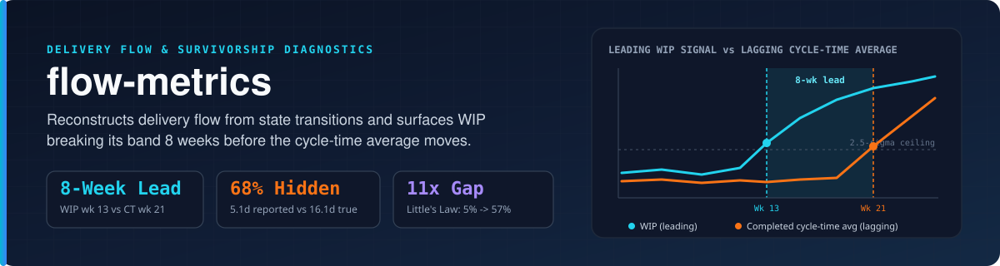
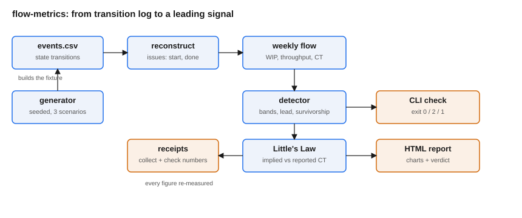

Switch between the three committed deterministic fixtures to inspect weekly WIP versus the 2.5-sigma baseline ceiling and completed cycle-time averages.
Every figure below is read directly from the committed experiment JSON files generated by make verify.
Zero-dependency reconstruction of Jira-style state transitions into weekly flow, band detection, Little's Law cross-check, and machine-verified receipts.
